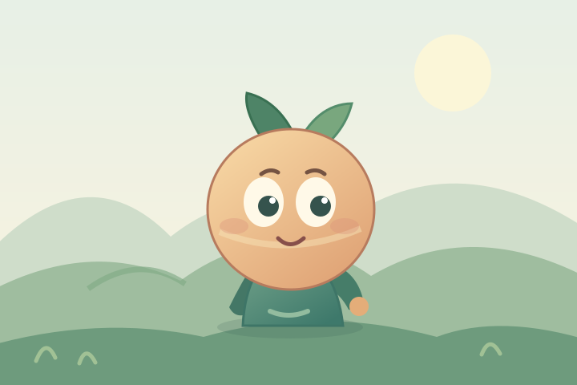

States
Each state changes a few named layers. The landscape moves only in Look mode.
Static illustration shown. The interactive rig is loading.
An original layered SVG rig inside a small depth scene. Change the character’s state; move a pointer across the scene in Look mode. This is a browser proof of the source-art workflow, not an app render.

Each state changes a few named layers. The landscape moves only in Look mode.
Static illustration shown. The interactive rig is loading.
What this tests: layered art, state changes, an interruptible head turn, independent gaze, ambient motion, pointer-linked depth, a one-shot reaction, and a still presentation. The source stays readable and editable; native performance and parity remain untested. Test the optional rendered loop.